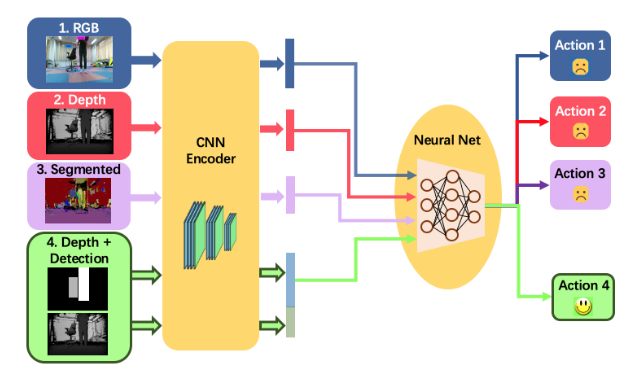

I am currently a master student at Robotics Institute, Shanghai Jiao Tong University. Before that I obtained
a dual degree from Shanghai Jiao Tong University (BS in mechanical engineering)
and École Centrale de Lyon (Diplôme d’Ingenieur). My research goal
is expanding the capacity of robots by means of collaboration and bridging the gap between theory and real-world robots by
means of simulation-to-real learning methods.
Research Interests
Multi-agent collaborative:
Single robot has limitations as capacity in speed, force, payload and
sensor range, etc. Collaborative strategies expand these capacities and can help the
team achieve complex tasks. Furthermore, as the robustness of communication techniques
among agents will sometimes affect the system's performance, developing non-communication
cooperation is a more effective alternative. My research interest is the analysis of decentralized
consensus among the agents based on their predictions of others' strategies and using only local
observations and with less communication possible.
Control and planning for swarm aerial robots:
Quadrotors aroused plenty research passion in recent years thanks to its ability to
navigate in cluttered environments. I am fascinated by the simplicity of its mechanical structure
together with the complexity and non-linearity within its dynamics. Aerial swarms can expand the capability
of one UAV in large-scale tasks while achieving more agility and closer formation.
Sim-to-real learning and perception:
Simulation tools greatly shorten the distance between theory and real world experiment.
These tools not only make the collection of large amount of data possible, but also create
platforms for efficient verification of algorithms. A good sim-to-real robotics system should
consider two sides: the detailed robot model bridging the difference between the real-world
dynamics and the one in simulation, and the abstract high-level representation of the environment
bridging the gap between the real-world perception and the one in simulation. The research goal
is to build detailed robots in simulator and come up with algorithms (Imitation Learning, RL, etc.)
trained in simulators which can be applied on real robots with less efforts possible.
Projects
Aerial Collaborative Transportation using multiple UAVs
Brief introduction In this project we explored collaborative strategies for multiple UAVs physically connected to a
payload via sphere joints. In this project we formulate the collaborative transportation problem as
a hierarchical problem to tackle the issue: 1)the coupling of the dynamics of the payload and the UAVs;
2)the high non-linearity of the UAV dynamics and 3)the decentralization of the strategies and its convergence.
Simulations are conducted with models of the real-world UAVs (e.g. AscTec Hummingbird).
Optimal polynomial trajectories are generated for transportation in cluttered environments; Collaborative distribution of
payload dynamics are deployed. On-going research is on the analysis of the Multi-agent System convergence.
github link:Collaborative_Aerial_Transportation
Sim-to-real imitation learning and depth-semantics representation of the environment

Brief introduction In this project we use depth-semantic features as the representation of the environment and the input to
end-to-end neural network for local obstacle avoidance in indoor navigation tasks. Comparison of different
types of representations of environment in navigation tasks, especially when human is in the task, trying to find the most appropriate
input to the NN in terms of task completion efficiency and the ability to react to moving obstacles in cluttered indoor environments.
We studied RGBD camera noise model, and added the model to the image data set before training, alleviating online computational complexity compared
to online filtering.
publication: Learning to Navigate from Simulation via Spatial and Semantic Information Synthesis, preprint: arxiv
Swarm coverage control based on description functions
Brief introduction Distributed coverage algorithm can be applied in many real world situations, such as surveillance and inspection.
In this project, we deployed a functional-based formulation of the distributed sensor coverage problem. We describe the sensor capacity as an isotropic bell-like surface centered at the agent's position for each agent, and we use this description function method to calculate autonomously the control inputs for each agent at every time step.
Each agent acts according to the local information left by all the other agents, together with their own sensor capability.
Specifically, agents align their velocity according to the direction of the less covered point possible in their neighbourhood. Difficulty lies in the solutions to the dead-lock situations and the efficiency of the coverage. This work can serve as a modular for further usage in hierarchical decentralized coverage algorithms.
State estimation, communication, and control for swarm UAVs
Brief introduction In this project we studied the nonlinear control and state estimation for UAVs and the swarm of UAVs.
Using motion capture system to estimate the state of a swarm of UAVs, we apply a centralized framework to control UAVs
with ROS topic mechanism. We explored several methods and compared ours with them.
We deployed methods using broadcast communication techniques (without hand-shaking process) and package encoding methods to help solve
the bandwidth limitation of the communication between the central node and the swarm.
Time Line
2017-now:Shanghai Jiao Tong University:
MS Major in Mechanical Engineering. Supervisors:
Xinjun Sheng and Wei Dong Award: China National Scholarship (Top 1%)
2019.6-2019.9:the Robotics Institute, Carnegie Mellon University: Intelligent Control Lab. Supervisor:
Changliu Liu 2017.6-2017.9:The French Institute of Sci & Tech for Transport, Development and Networks:
Research Intern in developing a Multi-body software with MATLAB and the software was sold to ESI Group. Supervisor:
Hugues Chollet 2015.9-2017.6:École Centrale De Lyon, Lyon, France
Élève d'Ingenieur (student in engineering degree)
Award: Eiffel Scholarship Program of Excellence (Top 9‰)
2013.9-2015.9:Shanghai Jiao Tong University:
BS Major in Mechanical Engineering.
Award: INESA Group Scholarship (Top 3%)